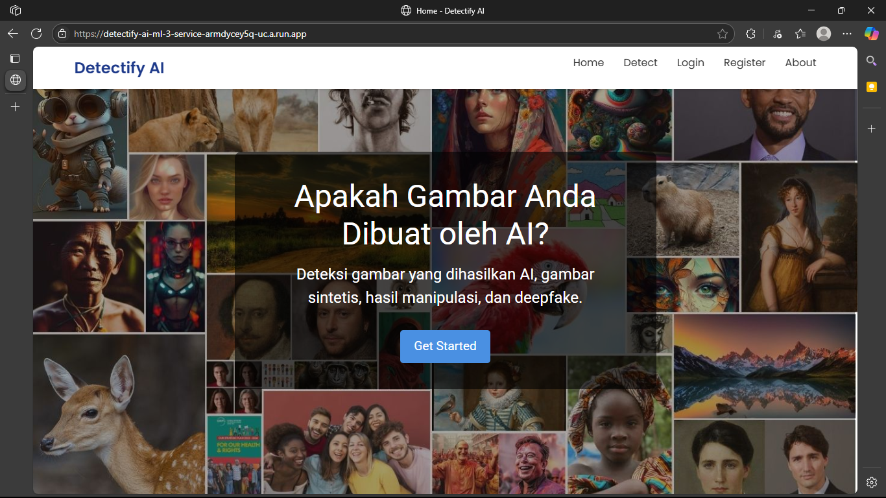

Archive
selected_projects
A repository of computational architecture and predictive modeling. Bridging the gap between raw data integrity and commercial viability.

Computer Vision
DETECTIFY_AI
ResNet50
Model klasifikasi Deep Learning untuk mendeteksi gambar buatan AI.
AUC_Score
85.9%
Accuracy
78.2%
scatter_plot
Data Clustering
DIGITAL_HABITS
Clustering
Analisis clustering untuk memetakan profil perilaku digital dan dampaknya terhadap produktivitas.
Profiles
4
Data_Points
5k+
hub
EAI (Enterprise Integration)
SISUPLY B2B_INTEGRATION
Flask API
Sistem integrasi backend untuk menyelaraskan alur kerja B2B logistik secara real-time.
API_Endpoints
15+
Endpoints Developed
Response_Time
<200ms
Avg. Firebase Latency
Integration
3 Party
Supplier, Distributor, Retailer
Data_Processing
Batch
Inventory Sync
analytics
Data Warehouse & BI
DW-SUPPLY F&B
ETL
Data Warehouse & Dashboard OLAP untuk optimasi rantai pasok industri F&B.
Architecture
Star_Schema
Data_Processing
ETL / OLAP
enhanced_encryption
Cybersecurity & NLP
MASKIFY
Regex
Sensor data pribadi (PII) dan filter konten otomatis untuk menjamin privasi.
Latency
<50ms
Retention
0%